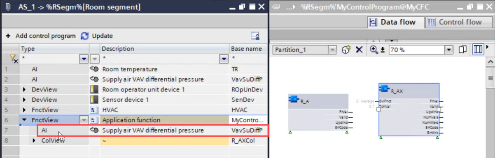
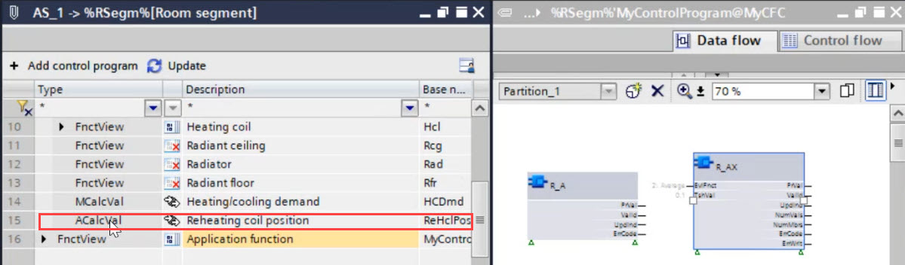

从应用程序函数中的相应接口中删除 BA 对象
Remove a BA object
对于应用程序函数使用的对象，可以删除 BA 对象。
- A BA object is assigned to an xFB.
- In the Project tree, select the application function of a control program.
- The BA objects list and the control program are visible.
- In the Add control program list, select the BA object.

- Right-click and select Remove.
- The BA object is removed from the application function.
Remove an owned BA object
对于应用程序函数使用的拥有的对象，可以删除拥有的 BA 对象。
- An owned BA object is assigned to an xFB.
- In the Project tree, select the application function of a control program.
- The BA objects list and the control program are visible.
- In the Add control program list, select the owned BA object.

- Right-click and select Remove.
- A Delete owned BA objects dialog box opens.
- Click Yes to remove the owned BA object.
- The owned BA object is removed from the application function.